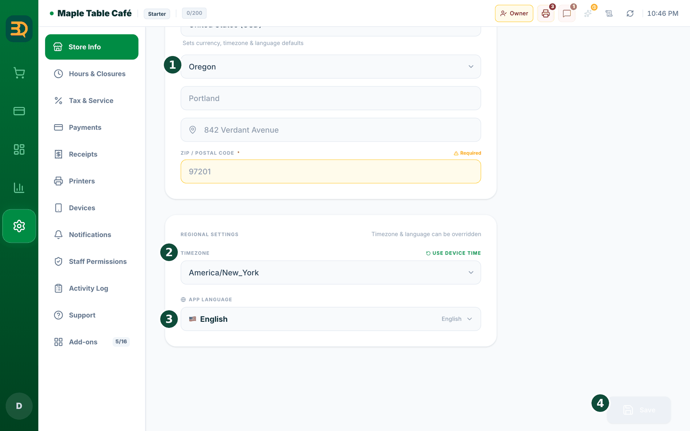

3设置门店
现在来填写店铺的基本信息。这只需做一次，请慢慢来，一次填一个框。


- 点击左侧边栏下方的 Settings（设置，齿轮图标）。
- 点击 Store Info（门店信息）。

- 输入店名、地址以及您使用的货币（如美元或英镑）。
- 确认业务类型是否正确（咖啡馆、餐厅等）。系统会据此为您设置桌台、员工和 PIN 登录。
- 打开 Hours & Closures（营业日 · 时间），输入店铺的营业时间。BrewDesk 会根据这些时间判断顾客何时可以预订餐桌、排队和手机点单。
- 打开税费设置。BrewDesk 会自动加上正确的税费，您无需自己计算。
- 添加小票上的内容，例如 Logo 和底部的感谢语。
- 点击 Save（保存）。您的店铺设置完成。
须知：部分国家有我们暂不支持的电子发票或财税记录规定，因此不提供选择。如果您选择了此类国家并保存，将看到 "This country is not supported."（暂不支持该国家/地区。）如果您所在的国家不在列表中，请联系客服。
设置税费
税费是政府对每笔销售额外征收的那部分款项。您只需设置一次，之后 BrewDesk 会在每笔销售中自动加上。下面来把税率设置正确。
点击左侧边栏的 Settings（设置），然后打开 Settings › Tax & Service。
- BrewDesk 可以为您所在地区推荐税率，但需要由您确认。点击 Refresh Now 获取推荐税率，或直接输入您自己的税率。
- 在税费行的税率框中输入税率（带 % 的数字框，位于名为 Tax 的名称框右侧），例如输入 8 表示 8%。
- 选择税费的显示方式。Tax Inclusive Pricing（含税定价）开启，表示您显示的价格已包含税费；关闭，表示结账时在价格之上另加税费。
- 可选：添加 Service Charge（服务费，按百分比或固定金额），并选择服务费是否计税。
- 点击 Save（保存）。右侧的实时小票预览会显示示例计算，方便您核对是否正确。
- 页面上有提示说明税率仅为建议值，请向您的税务顾问确认。
Settings › Payments 下另一项独立的设置，并且只对现金生效。详见现金收款取整。不同商品税率不同？请使用 Tax types（税种类型）
有些地区对不同商品的征税方式不同，例如普通食品可能免税，而热饮要征税。如果您属于这种情况，BrewDesk 可以保存几种税种类型，您为每个商品选择合适的一种即可。如果店里所有商品都使用同一税率，可以跳过本节，对您没有任何影响。
打开 Settings › Tax & Service，找到 Tax types 卡片。需要此功能的地区（例如加拿大）的店铺会看到它，部分自行开启该功能的美国店铺也会看到。


- 点击 Set up tax types。BrewDesk 会填入您所在地区的常见税种。如果与您的情况不符，会出现黄色提示 "These taxes don't match the standard for your region."（这些税种与您所在地区的标准不符。）点击 Use regional standard（使用地区标准）即可一键修正。
- 在 Taxes 下，每项税费都有 Tax name（税名）和 Tax rate (%)（税率 (%)）。点击 Add tax 可再添加一项。这是唯一可以设置税率的地方。
- 在 Tax types 下，点击 Add tax type，填写 Tax type name，并勾选 "Taxes that apply"（适用的税费）。对完全不征税的商品，请选择 No tax (exempt)（免税）。
- 其中一个类型会标记为 Default（默认）。凡是自身没有税种类型的商品，以及服务费，都使用它。
- 在左侧边栏进入 Manage（管理）› Menu Items（菜单项目）。在分类上选择 "Tax type for this category"；在商品上选择 Tax type。除非该商品的税率与分类不同，否则请保持 Follow category（跟随分类）。
须知：小票和报表会把每种税单独列一行，因此两种税不能同名，BrewDesk 会要求您为其中一个改名。少数地区（马萨诸塞州和罗德岛州）只对超过限额的部分征税，金额条件无法复制这种规则，因此会出现警告。请务必与您的税务顾问核对设置。
节假日与特殊日期
标记您的休息日后，BrewDesk 会在当天阻止顾客预订餐桌、加入候位名单或用手机点单。法定节假日、员工培训、临时休息，都可以在这里设置。
打开 Settings › Hours & Closures，在页面下方找到 Holidays & Special Days（休息日与特殊营业日）。即使没有开启预约附加功能也可以使用。日历位于左侧；您正在查看的当月休息日列表位于右侧。

- 点击列表上方的 "+ Add"，或点击日历上的某个日期，或点击列表中已有的条目，会弹出一个窗口。
- 选择日期。单个日期选 One day（单日），一次关闭一段连续日期（最多 31 天）则选 Date range（日期范围），非常适合多日假期。
- 开启 Closed all day（全天休息）。开启后，在 Services to close 下选择要停止的服务，包括预约、候位名单、在线及 QR 点单。您可以只关闭其中一项，其他保持开放。
- 输入简短的 Label（标签），如“圣诞节”或“员工培训”。您在 Message shown to guests（向顾客显示的提示）中填写的内容，就是顾客会看到的文字。
- 点击 Save（保存）。它会立即显示在日历和列表中。
标记一次休息日，所有服务一起关闭。您的预订页面、候位名单和顾客的手机点单当天会同时关闭，无需逐个手动关闭，多日假期还可以一次性登记。
一眼看清服务状态
顾客现在能预订吗？能排队吗？能用手机点单吗？一组按钮立刻告诉您，让您不用等顾客来告诉您哪里不能用。
点击左侧边栏的 Tables（桌台）打开 Table Map（桌台图）界面，顶部工具栏有三个按钮：Online Orders（在线订单）、Reservations（预订）和 Waitlist（候位名单）。无需开启任何设置，它们始终存在。（这些原先是顶部栏中的小徽标，现在改为桌台图上更大的按钮。）
- 按钮颜色表示状态：彩色表示正常运行，灰色表示您已将其关闭，带时钟的灰色表示暂时暂停，带锁的灰色表示被套餐或支付设置等因素限制。
- 点击按钮，打开 "What customers can use right now"（顾客现在可以使用的功能）。
- 它会告诉您某项服务为什么关闭，例如 “Closed today”（今日休息）、“Outside business hours”（不在营业时间内）、“Main POS is offline”（主收银台离线）、“Requires the {plan} plan”（需要 {plan} 套餐）、“Payment setup required”（需要完成支付设置）或 “Monthly order limit reached”（已达月订单上限）。
- 需要暂时停止接受某项服务？点击底部的 "Pause for today…"（今日暂停…）。
- 选择服务和暂停时长：20 minutes（20 分钟）、60 minutes（60 分钟）、Until close today（直到今日打烊，下次营业时自动恢复）或 Until I turn it back on（直到我手动重新开启）。
须知：这些原因文字也会显示在顾客的屏幕上，让顾客不会疑惑为什么不能点单。